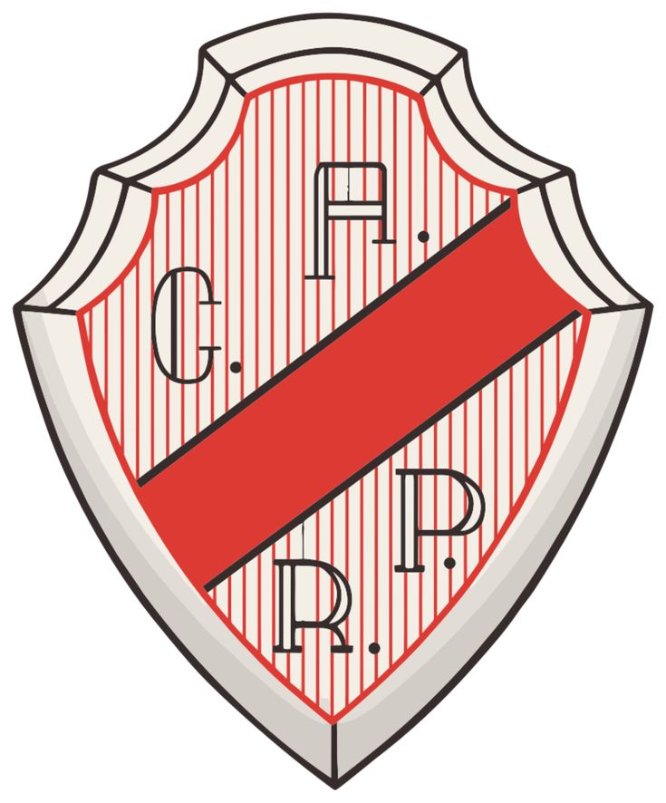
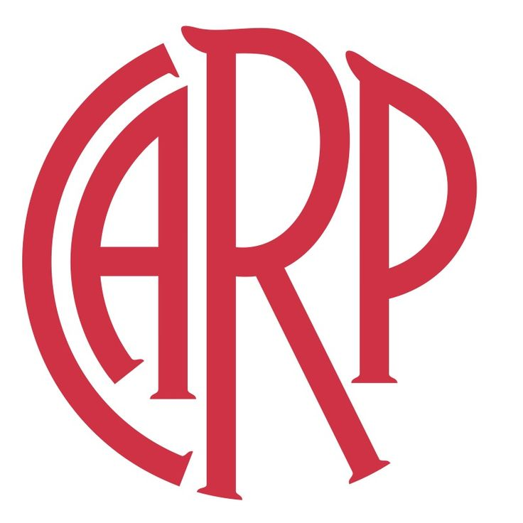
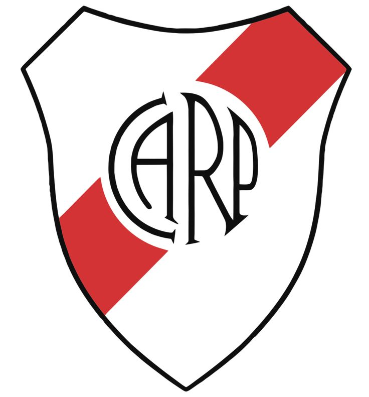
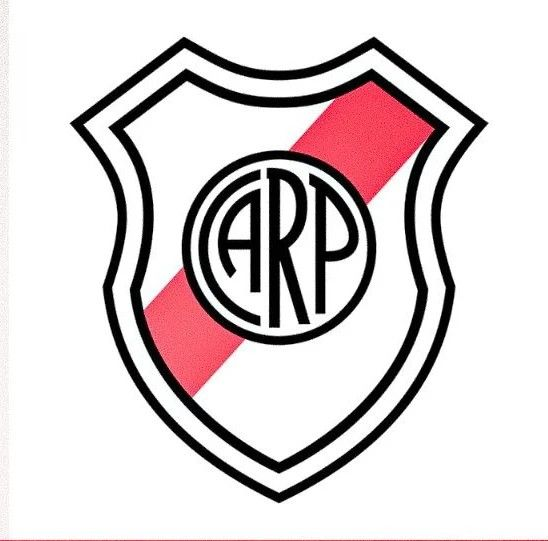
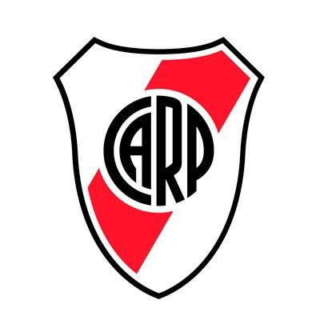
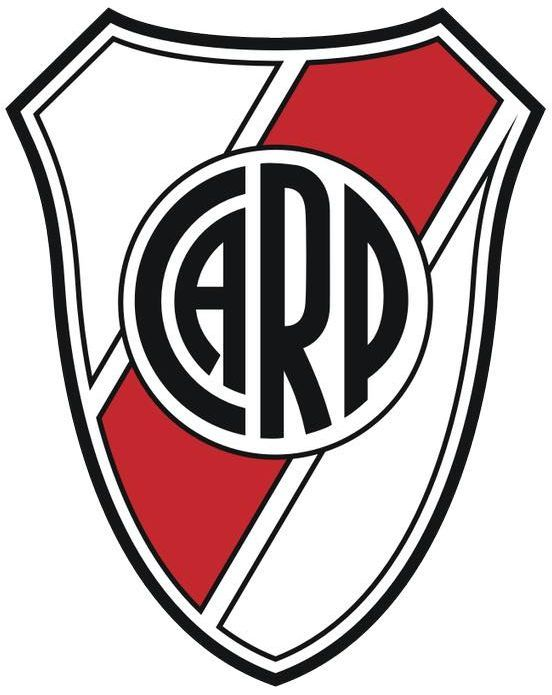
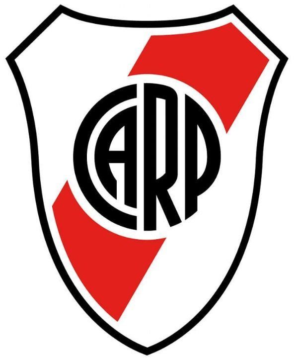

| Evoluvión escudo de River | ||||||||||||||
| 1918 | 1928 | 1930 | 1931 | 1932 | 1933 | 1941 | 1947 | 1950 | 1970 | 1985 | 1994 | 1997 | 2006 | 2022 |
 |
 |  |
 |
 |
 |  |  |  |
 |
 |
 |  |  | |
| Historia | ||||||||||||||
|
A comienzos del siglo XX, cuando el Club Atlético River Plate daba sus primeros pasos en los barrios porteños, todavía no había un emblema que lo identificara. Solo había camisetas blancas, y luego aquella franja roja cruzada en diagonal que, casi por casualidad en un carnaval, se transformó en símbolo eterno. Con el tiempo, la necesidad de un escudo apareció. Al principio fue sencillo: un óvalo blanco con las iniciales C.A.R.P., negras y austeras. No tenía adornos, pero transmitía pertenencia. Los hinchas ya sabían que esas cuatro letras representaban algo más que un equipo: eran orgullo y pasión. En la década de 1930, el escudo adoptó su forma definitiva. El óvalo se vistió con la banda roja, la misma que los jugadores llevaban en el pecho. Las iniciales quedaron grandes, firmes, en el centro. Así, camiseta y escudo quedaron unidos para siempre en un mismo gesto de identidad. Década tras década, el emblema fue modernizándose, afinando líneas, pero sin perder su esencia. La forma ovalada, la franja roja y las letras CARP permanecieron inalterables, como tres pilares de una historia gloriosa. Hoy, el escudo de River Plate es reconocido en todo el mundo. No es solo un diseño: es el reflejo de más de un siglo de fútbol, de alegrías, de títulos y de una hinchada que lo lleva en el corazón. La banda roja, nacida casi por azar, se convirtió en mito. Y en cada camiseta, en cada bandera y en cada escudo, late el espíritu de River. |
||||||||||||||